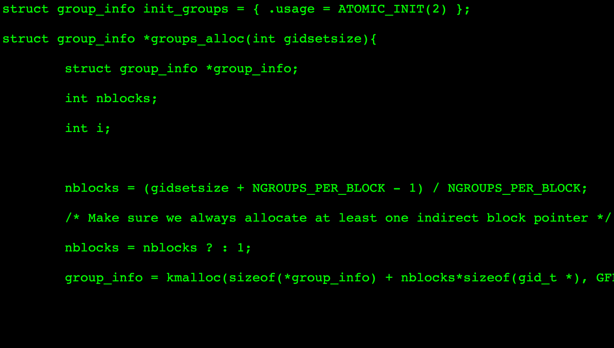

10x developers really exist
May 9, 2022 · 3 minute read · CommentsLeadership

Since the original 1968 article, “*Exploratory experimental studies comparing online and offline programming performance”*, there has been a lot of debate around the figure of the 10x developer. We’re talking about engineers who are an order of magnitude “better” than their peers by whatever measure.
These engineers exist, but not in the way most people describe them.
Typically, the stories describe them as those who:
- Can close 10 times more Jira issues.
- Complete 10 times more story points.
- Write 10 times more lines of code.
Unfortunately, there are a few shortcomings. These two posts describe them eloquently, give them a read.
- “*The 10x programmer myth”* by Justin Etheredge**.**
- “We fired our top talent. Best decision we ever made” by Jonathan Solórzano-Hamilton.
We can summarise these damaging traits as follows:
- They work in isolation and lack self-awareness. They are never wrong.
- They become the only person who knows about an increasingly large number of systems. That decreases the bus factor.
- All of a sudden, every technical decision and question goes through them and they become a dangerous bottleneck.
- They are good technically, but they don’t coach nor mentor and so the team misses on great growth opportunities.
Linus Torvalds’ “abrasive” behavior comes to mind. Cassidy also characterises the 10x developer quite effectively.
Life as a 10x engineer pic.twitter.com/bdsHTw0QEv
— Cassidy (@cassidoo) July 13, 2019
It doesn’t sound like a massive win for a development team to have such an individual in their ranks. So… how come I think the 10x developer actually exists?
Developers who scale themselves by making everyone in the team better often become 10x developers. Their traits and behaviors are quite different from those traditionally attributed to the classical 10x developer.
- Excellent communication skills, both written and verbal.
- They build trust through transparency and vulnerability.
- A regular part of their job is to coach other team members through coffee chats, workshops, or 1-1s.
- They facilitate participation from everyone and truly listen to their ideas, making them feel safe and valued.
- They have strong opinions, loosely held.
- They constantly look for new things to learn.
- They regularly sponsor initiatives to iteratively improve the team and encourage others to do the same.
Building software products is a deeply collaborative activity. Team performance grows exponentially when your developers have a strong technical foundation, are excellent collaborators, and trust each other. No lone wolf wonder-genius can scale themselves to that level by hacking away in a cave. It’s just impossible.
Engineering leaders play a key role in fostering a culture where these traits are celebrated and become part of the core expectations of all developers in the team. It is essential the incentive system is aligned with the kind of team you want to build. When lone wolves who routinely work evenings and weekends are the ones getting pay raises and promotions, you will get a burnt-out team who don’t trust each other. When you make a habit of giving shout-outs and promotions to folks who helped the collective improve, you will reap the benefits tenfold.
10x developers really exist, they make everyone else in the team better.